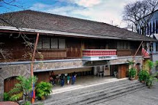

Valenzuela
Valenzuela Tourist Spot
Return to the Map

Valenzuela Museum
one of the city’s main historical and cultural landmarks. The museum houses a vast collection of artifacts and memorabilia that traces Valenzuela’s history and progress.